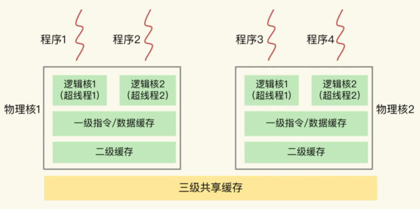

CPU结构对redis的影响
主流CPU
当前主流CPU主要包括两种：单CPU多核架构、多CPU架构。
单CPU多核架构
当前主流CPU架构，一般是多核（物理核）、一级缓存、二级缓存、三级缓存构成，如下图：

- 一个 CPU 处理器中一般有多个运行核心，我们把一个运行核心称为一个物理核，每个物理核通常都会运行两个超线程，也叫作逻辑核，每个逻辑核都可以运行应用程序。
- 每个物理核都拥有私有的一级缓存（Level 1 cache，简称 L1 cache），包括一级指令缓存和一级数据缓存，以及私有的二级缓存（Level 2 cache，简称 L2 cache）。私有表示只被当前物理核心使用。
- 不同的物理核还会共享一个共同的三级缓存（Level 3 cache，简称为 L3 cache）。当 L1、L2 缓存中没有数据缓存时，可以访问 L3，尽可能避免访问内存。
注：L1 cache、L2 cache一般只有KB级别，L3 cache能达到几十MB，这是由CPU制造工艺决定的。
多CPU架构
主流的服务器上，一个 CPU 处理器会有 10 到 20 多个物理核。同时，为了提升服务器的处理能力，服务器上通常还会有多个 CPU 处理器（也称为多 CPU Socket），每个处理器有自己的物理核（包括 L1、L2 缓存），L3 缓存，以及连接的内存，同时，不同处理器间通过总线连接。如下图：
- 在多 CPU 架构上，应用程序可以在不同的处理器上运行。在刚才的图中，Redis 可以先在 Socket 1 上运行一段时间，然后再被调度到 Socket 2 上运行。
- 如果应用程序先在一个 Socket 上运行，并且把数据保存到了内存，然后被调度到另一个 Socket 上运行，此时，应用程序再进行内存访问时，就需要访问之前 Socket 上连接的内存，这种访问属于远端内存访问。和访问 Socket 直接连接的内存相比，远端内存访问会增加应用程序的延迟。
- 在多 CPU 架构下，一个应用程序访问所在 Socket 的本地内存和访问远端内存的延迟并不一致，所以，我们也把这个架构称为非统一内存访问架构（Non-Uniform Memory Access，NUMA 架构）。
总结
- L1、L2 缓存中的指令和数据的访问速度很快，所以，充分利用 L1、L2 缓存，可以有效缩短应用程序的执行时间；
- 在 NUMA 架构下，如果应用程序从一个 Socket 上调度到另一个 Socket 上，就可能会出现远端内存访问的情况，这会直接增加应用程序的执行时间。
CPU结构对redis的影响
CPU 多核对 Redis 性能的影响
在一个 CPU 核上运行时，应用程序需要记录自身使用的软硬件资源信息（例如栈指针、CPU 核的寄存器值等），我们把这些信息称为运行时信息。同时，应用程序访问最频繁的指令和数据还会被缓存到 L1、L2 缓存上，以便提升执行速度。在多核 CPU 的场景下，一旦应用程序需要在一个新的 CPU 核上运行，那么，运行时信息就需要重新加载到新的 CPU 核上。而且，新的 CPU 核的 L1、L2 缓存也需要重新加载数据和指令，这会导致程序的运行时间增加。
如果在 CPU 多核场景下，Redis 实例被频繁调度到不同 CPU 核上运行的话，那么，对 Redis 实例的请求处理时间影响就更大了。每调度一次，一些请求就会受到运行时信息、指令和数据重新加载过程的影响，这就会导致某些请求的延迟明显高于其他请求。
要避免 Redis 总是在不同 CPU 核上来回调度执行。于是，我们尝试着把 Redis 实例和 CPU 核绑定了，让一个 Redis 实例固定运行在一个 CPU 核上。我们可以使用 taskset 命令把一个程序绑定在一个核上运行。
taskset -c 0 ./redis-server
CPU 的 NUMA 架构对 Redis 性能的影响
在实际应用 Redis 时，我经常看到一种做法，为了提升 Redis 的网络性能，把操作系统的网络中断处理程序和 CPU 核绑定。这个做法可以避免网络中断处理程序在不同核上来回调度执行，的确能有效提升 Redis 的网络处理性能。
但是，网络中断程序是要和 Redis 实例进行网络数据交互的，一旦把网络中断程序绑核后，我们就需要注意 Redis 实例是绑在哪个核上了，这会关系到 Redis 访问网络数据的效率高低。
我们先来看下 Redis 实例和网络中断程序的数据交互：网络中断处理程序从网卡硬件中读取数据，并把数据写入到操作系统内核维护的一块内存缓冲区。内核会通过 epoll 机制触发事件，通知 Redis 实例，Redis 实例再把数据从内核的内存缓冲区拷贝到自己的内存空间，如下图所示：
那么，在 CPU 的 NUMA 架构下，当网络中断处理程序、Redis 实例分别和 CPU 核绑定后，就会有一个潜在的风险：如果网络中断处理程序和 Redis 实例各自所绑的 CPU 核不在同一个 CPU Socket 上，那么，Redis 实例读取网络数据时，就需要跨 CPU Socket 访问内存，这个过程会花费较多时间。如下图：
可以看到，图中的网络中断处理程序被绑在了 CPU Socket 1 的某个核上，而 Redis 实例则被绑在了 CPU Socket 2 上。此时，网络中断处理程序读取到的网络数据，被保存在 CPU Socket 1 的本地内存中，当 Redis 实例要访问网络数据时，就需要 Socket 2 通过总线把内存访问命令发送到 Socket 1 上，进行远程访问，时间开销比较大。
为了避免 Redis 跨 CPU Socket 访问网络数据，我们最好把网络中断程序和 Redis 实例绑在同一个 CPU Socket 上，这样一来，Redis 实例就可以直接从本地内存读取网络数据了，如下图所示：
不过，需要注意的是，在 CPU 的 NUMA 架构下，对 CPU 核的编号规则，并不是先把一个 CPU Socket 中的所有逻辑核编完，再对下一个 CPU Socket 中的逻辑核编码，而是先给每个 CPU Socket 中每个物理核的第一个逻辑核依次编号，再给每个 CPU Socket 中的物理核的第二个逻辑核依次编号。
我给你举个例子。假设有 2 个 CPU Socket，每个 Socket 上有 6 个物理核，每个物理核又有 2 个逻辑核，总共 24 个逻辑核。我们可以执行 lscpu 命令，查看到这些核的编号：
lscpu
Architecture: x86_64
...
NUMA node0 CPU(s): 0-5,12-17
NUMA node1 CPU(s): 6-11,18-23
...
可以看到，NUMA node0 的 CPU 核编号是 0 到 5、12 到 17。其中，0 到 5 是 node0 上的 6 个物理核中的第一个逻辑核的编号，12 到 17 是相应物理核中的第二个逻辑核编号。NUMA node1 的 CPU 核编号规则和 node0 一样。
所以，在绑核时，我们一定要注意，不能想当然地认为第一个 Socket 上的 12 个逻辑核的编号就是 0 到 11。否则，网络中断程序和 Redis 实例就可能绑在了不同的 CPU Socket 上。
比如说，如果我们把网络中断程序和 Redis 实例分别绑到编号为 1 和 7 的 CPU 核上，此时，它们仍然是在 2 个 CPU Socket 上，Redis 实例仍然需要跨 Socket 读取网络数据。
所以，你一定要注意 NUMA 架构下 CPU 核的编号方法，这样才不会绑错核。
总结
在 CPU 多核的场景下，用 taskset 命令把 Redis 实例和一个核绑定，可以减少 Redis 实例在不同核上被来回调度执行的开销，避免较高的尾延迟；在多 CPU 的 NUMA 架构下，如果你对网络中断程序做了绑核操作，建议你同时把 Redis 实例和网络中断程序绑在同一个 CPU Socket 的不同核上，这样可以避免 Redis 跨 Socket 访问内存中的网络数据的时间开销。
绑核的风险和解决方案
Redis 除了主线程以外，还有用于 RDB 生成和 AOF 重写的子进程，还有 Redis 的后台线程。当我们把 Redis 实例绑到一个 CPU 逻辑核上时，就会导致子进程、后台线程和 Redis 主线程竞争 CPU 资源，一旦子进程或后台线程占用 CPU 时，主线程就会被阻塞，导致 Redis 请求延迟增加。针对这种情况，我来给你介绍两种解决方案，分别是一个 Redis 实例对应绑一个物理核和优化 Redis 源码。
Redis 实例对应绑一个物理核
在给 Redis 实例绑核时，我们不要把一个实例和一个逻辑核绑定，而要和一个物理核绑定，也就是说，把一个物理核的 2 个逻辑核都用上。
我们还是以刚才的 NUMA 架构为例，NUMA node0 的 CPU 核编号是 0 到 5、12 到 17。其中，编号 0 和 12、1 和 13、2 和 14 等都是表示一个物理核的 2 个逻辑核。所以，在绑核时，我们使用属于同一个物理核的 2 个逻辑核进行绑核操作。例如，我们执行下面的命令，就把 Redis 实例绑定到了逻辑核 0 和 12 上，而这两个核正好都属于物理核 1。
taskset -c 0,12 ./redis-server
和只绑一个逻辑核相比，把 Redis 实例和物理核绑定，可以让主线程、子进程、后台线程共享使用 2 个逻辑核，可以在一定程度上缓解 CPU 资源竞争。但是，因为只用了 2 个逻辑核，它们相互之间的 CPU 竞争仍然还会存在。如果你还想进一步减少 CPU 竞争，我再给你介绍一种方案。
优化 Redis 源码
这个方案就是通过修改 Redis 源码，把子进程和后台线程绑到不同的 CPU 核上。
如果你对 Redis 的源码不太熟悉，也没关系，因为这是通过编程实现绑核的一个通用做法。学会了这个方案，你可以在熟悉了源码之后把它用上，也可以应用在其他需要绑核的场景中。
接下来，我先介绍一下通用的做法，然后，再具体说说可以把这个做法对应到 Redis 的哪部分源码中。
通过编程实现绑核时，要用到操作系统提供的 1 个数据结构 cpu_set_t 和 3 个函数 CPU_ZERO、CPU_SET 和 sched_setaffinity，我先来解释下它们。
- cpu_set_t 数据结构：是一个位图，每一位用来表示服务器上的一个 CPU 逻辑核。
- CPU_ZERO 函数：以 cpu_set_t 结构的位图为输入参数，把位图中所有的位设置为 0。
- CPU_SET 函数：以 CPU 逻辑核编号和 cpu_set_t 位图为参数，把位图中和输入的逻辑核编号对应的位设置为 1。
- sched_setaffinity 函数：以进程 / 线程 ID 号和 cpu_set_t 为参数，检查 cpu_set_t 中哪一位为 1，就把输入的 ID 号所代表的进程 / 线程绑在对应的逻辑核上。
那么，怎么在编程时把这三个函数结合起来实现绑核呢？很简单，我们分四步走就行。
- 第一步：创建一个 cpu_set_t 结构的位图变量；
- 第二步：使用 CPU_ZERO 函数，把 cpu_set_t 结构的位图所有的位都设置为 0；
- 第三步：根据要绑定的逻辑核编号，使用 CPU_SET 函数，把 cpu_set_t 结构的位图相应位设置为 1；
- 第四步：使用 sched_setaffinity 函数，把程序绑定在 cpu_set_t 结构位图中为 1 的逻辑核上。
下面，我就具体介绍下，分别把后台线程、子进程绑到不同的核上的做法。
先说后台线程。为了让你更好地理解编程实现绑核，你可以看下这段示例代码，它实现了为线程绑核的操作：
//线程函数
void worker(int bind_cpu){
cpu_set_t cpuset; //创建位图变量
CPU_ZERO(&cpu_set); //位图变量所有位设置0
CPU_SET(bind_cpu, &cpuset); //根据输入的bind_cpu编号，把位图对应为设置为1
sched_setaffinity(0, sizeof(cpuset), &cpuset); //把程序绑定在cpu_set_t结构位图中为1的逻辑核
//实际线程函数工作
}
int main(){
pthread_t pthread1
//把创建的pthread1绑在编号为3的逻辑核上
pthread_create(&pthread1, NULL, (void *)worker, 3);
}
对于 Redis 来说，它是在 bio.c 文件中的 bioProcessBackgroundJobs 函数中创建了后台线程。bioProcessBackgroundJobs 函数类似于刚刚的例子中的 worker 函数，在这个函数中实现绑核四步操作，就可以把后台线程绑到和主线程不同的核上了。
和给线程绑核类似，当我们使用 fork 创建子进程时，也可以把刚刚说的四步操作实现在 fork 后的子进程代码中，示例代码如下：
int main(){
//用fork创建一个子进程
pid_t p = fork();
if(p < 0){
printf(" fork error\n");
}
//子进程代码部分
else if(!p){
cpu_set_t cpuset; //创建位图变量
CPU_ZERO(&cpu_set); //位图变量所有位设置0
CPU_SET(3, &cpuset); //把位图的第3位设置为1
sched_setaffinity(0, sizeof(cpuset), &cpuset); //把程序绑定在3号逻辑核
//实际子进程工作
exit(0);
}
...
}
对于 Redis 来说，生成 RDB 和 AOF 日志重写的子进程分别是下面两个文件的函数中实现的。
- rdb.c 文件：rdbSaveBackground 函数；
- aof.c 文件：rewriteAppendOnlyFileBackground 函数。
这两个函数中都调用了 fork 创建子进程，所以，我们可以在子进程代码部分加上绑核的四步操作。
使用源码优化方案，我们既可以实现 Redis 实例绑核，避免切换核带来的性能影响，还可以让子进程、后台线程和主线程不在同一个核上运行，避免了它们之间的 CPU 资源竞争。相比使用 taskset 绑核来说，这个方案可以进一步降低绑核的风险。
小结
- 在多核 CPU 架构下，Redis 如果在不同的核上运行，就需要频繁地进行上下文切换，这个过程会增加 Redis 的执行时间，客户端也会观察到较高的尾延迟了。所以，建议你在 Redis 运行时，把实例和某个核绑定，这样，就能重复利用核上的 L1、L2 缓存，可以降低响应延迟。
- 为了提升 Redis 的网络性能，我们有时还会把网络中断处理程序和 CPU 核绑定。在这种情况下，如果服务器使用的是 NUMA 架构，Redis 实例一旦被调度到和中断处理程序不在同一个 CPU Socket，就要跨 CPU Socket 访问网络数据，这就会降低 Redis 的性能。所以，我建议你把 Redis 实例和网络中断处理程序绑在同一个 CPU Socket 下的不同核上，这样可以提升 Redis 的运行性能。
- 虽然绑核可以帮助 Redis 降低请求执行时间，但是，除了主线程，Redis 还有用于 RDB 和 AOF 重写的子进程，以及 4.0 版本之后提供的用于惰性删除的后台线程。当 Redis 实例和一个逻辑核绑定后，这些子进程和后台线程会和主线程竞争 CPU 资源，也会对 Redis 性能造成影响。所以，我给了你两个建议：
- 如果你不想修改 Redis 代码，可以把按一个 Redis 实例一个物理核方式进行绑定，这样，Redis 的主线程、子进程和后台线程可以共享使用一个物理核上的两个逻辑核。
- 如果你很熟悉 Redis 的源码，就可以在源码中增加绑核操作，把子进程和后台线程绑到不同的核上，这样可以避免对主线程的 CPU 资源竞争。不过，如果你不熟悉 Redis 源码，也不用太担心，Redis 6.0 出来后，可以支持 CPU 核绑定的配置操作了，我将在第 38 讲中向你介绍 Redis 6.0 的最新特性。
问题
在一台有 2 个 CPU Socket（每个 Socket 8 个物理核）的服务器上，我们部署了有 8 个实例的 Redis 切片集群（8 个实例都为主节点，没有主备关系），现在有两个方案：
- 在同一个 CPU Socket 上运行 8 个实例，并和 8 个 CPU 核绑定；
- 在 2 个 CPU Socket 上各运行 4 个实例，并和相应 Socket 上的核绑定。
如果不考虑网络数据读取的影响，你会选择哪个方案呢？
答：更倾向于的方案是：在两个CPU Socket上各运行4个实例，并和相应Socket上的核绑定。这么做的原因主要从L3 Cache的命中率、内存利用率、避免使用到Swap这三个方面考虑：
1、由于CPU Socket1和2分别有自己的L3 Cache，如果把所有实例都绑定在同一个CPU Socket上，相当于这些实例共用这一个L3 Cache，另一个CPU Socket的L3 Cache浪费了。这些实例共用一个L3 Cache，会导致Cache中的数据频繁被替换，访问命中率下降，之后只能从内存中读取数据，这会增加访问的延迟。而8个实例分别绑定CPU Socket，可以充分使用2个L3 Cache，提高L3 Cache的命中率，减少从内存读取数据的开销，从而降低延迟。
2、如果这些实例都绑定在一个CPU Socket，由于采用NUMA架构的原因，所有实例会优先使用这一个节点的内存，当这个节点内存不足时，再经过总线去申请另一个CPU Socket下的内存，此时也会增加延迟。而8个实例分别使用2个CPU Socket，各自在访问内存时都是就近访问，延迟最低。
3、如果这些实例都绑定在一个CPU Socket，还有一个比较大的风险是：用到Swap的概率将会大大提高。如果这个CPU Socket对应的内存不够了，也可能不会去另一个节点申请内存（操作系统可以配置内存回收策略和Swap使用倾向：本节点回收内存/其他节点申请内存/内存数据换到Swap的倾向程度），而操作系统可能会把这个节点的一部分内存数据换到Swap上从而释放出内存给进程使用（如果没开启Swap可会导致直接OOM）。因为Redis要求性能非常高，如果从Swap中读取数据，此时Redis的性能就会急剧下降，延迟变大。所以8个实例分别绑定CPU Socket，既可以充分使用2个节点的内存，提高内存使用率，而且触发使用Swap的风险也会降低。
其实我们可以查一下，在NUMA架构下，也经常发生某一个节点内存不够，但其他节点内存充足的情况下，依旧使用到了Swap，进而导致软件性能急剧下降的例子。所以在运维层面，我们也需要关注NUMA架构下的内存使用情况（多个内存节点使用可能不均衡），并合理配置系统参数（内存回收策略/Swap使用倾向），尽量去避免使用到Swap。